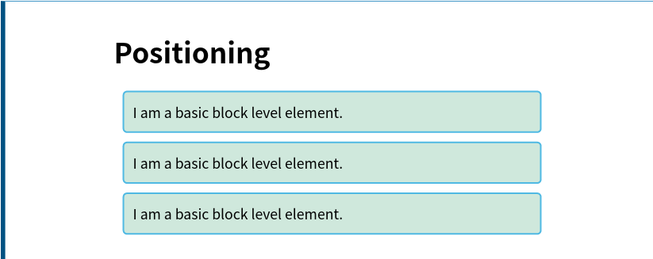
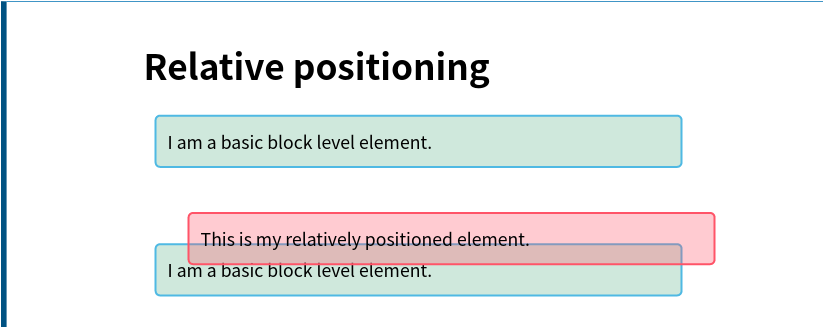
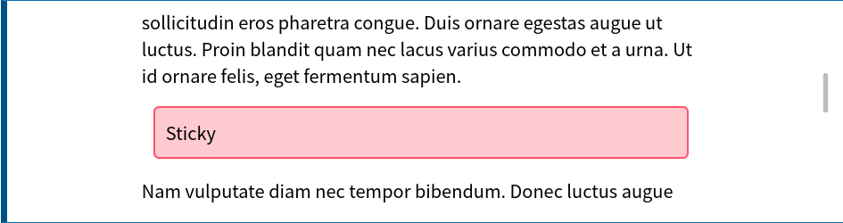

CSS 进阶——定位
本文按照 Mozilla 贡献者基于 CC-BY-SA 2.5 协议发布的以下文章改编:
- https://developer.mozilla.org/zh-CN/docs/Learn/CSS/CSS_layout/Introduction
- https://developer.mozilla.org/zh-CN/docs/Learn/CSS/CSS_layout/Positioning
定位
定位(positioning)能够让我们把一个元素从它原本在正常布局流(normal flow)中应该在的位置移动到另一个位置。定位(positioning)并不是一种用来给你做主要页面布局的方式，它更像是让你去管理和微调页面中的一个特殊项的位置。
有一些非常有用的技术在特定的布局下依赖于 position 属性。同时，理解定位(positioning)也能够帮助你理解正常布局流(normal flow)，理解把一个元素移出正常布局流(normal flow)是怎么一回事。
- 静态定位(Static positioning)是每个元素默认的属性——它表示“将元素放在文档布局流的默认位置——没有什么特殊的地方”。
- 相对定位(Relative positioning)允许我们相对于元素在正常的文档流中的位置移动它——包括将两个元素叠放在页面上。这对于微调和精准设计(design pinpointing)非常有用。
- 绝对定位(Absolute positioning)将元素完全从页面的正常布局流(normal layout flow)中移出，类似将它单独放在一个图层中。我们可以将元素相对于页面的
<html>元素边缘固定，或者相对于该元素的最近被定位祖先元素(nearest positioned ancestor element)。绝对定位在创建复杂布局效果时非常有用，例如通过标签显示和隐藏的内容面板或者通过按钮控制滑动到屏幕中的信息面板。 - 固定定位(Fixed positioning)与绝对定位非常类似，但是它是将一个元素相对浏览器视口固定，而不是相对另外一个元素。 这在创建类似在整个页面滚动过程中总是处于屏幕的某个位置的导航菜单时非常有用。
- 粘性定位(Sticky positioning)是一种新的定位方式，它会让元素先保持和
position: static一样的定位，当它的相对视口位置(offset from the viewport)达到某一个预设值时，他就会像position: fixed一样定位。
如果看不明白，就了解下我们下面的例子吧。
简单定位示例
我们将展示一些示例代码来熟悉这些布局技术. 这些示例代码都作用在下面这一个相同的HTML上：
1 | <h1>Positioning</h1> |
该 HTML 将使用以下 CSS 样式（下面为了节省纸张，统一忽略这些，希望能够理解）：
1 | body { |
渲染效果如下，就是一个很正常的 HTML:

相对定位
相对定位(relative positioning)让你能够把一个正常布局流(normal flow)中的元素从它的默认位置按坐标进行相对移动。比如将一个图标往下调一点，以便放置文字. 我们可以通过下面的规则添加相对定位来实现效果:
1 | .positioned { |
这里我们给中间段落的 position 一个 relative 值——这属性本身不做任何事情，所以我们还添加了 top 和 left 属性。这样会让这个元素向下和向右各移动 30px 。看起来有点反直觉，不过想想就明白了：这里相当于是它左边和顶部的元素被“推开”一定距离，导致了它的向下向右移动。
添加此代码，然后你就能看到结果：
1 | .positioned { |

绝对定位
绝对定位用于将元素移出正常布局流(normal flow)，以坐标的形式相对于它的容器定位到 web 页面的任何位置，以创建复杂的布局。它经常被用于与相对定位和浮动的协同工作。
回到我们最初的非定位示例，我们可以添加以下的CSS规则来实现绝对定位：
1 | .positioned { |
这里我们给我们的中间段一个 position 的 absolute 值，并且和前面一样加上 top 和 left 属性，好像没啥区别，不过这里的 top 和 left 相对的地方不再是它的父元素，而是页面本身了。添加此代码将给出以下结果（手残选中了那个 absolutely ，不要管它）：
1 | .positioned { |
固定定位
这个和绝对定位有一点像，不同的一点是，它是相对浏览器窗口边框的位置，而不是相对页面容器的位置。
在这个例子里面，我们在HTML加了三段很长的文本来使得页面可滚动，又加了一个带有 position: fixed 的盒子。
1 | <h1>Fixed positioning</h1> |
1 | .positioned { |
(注意右边滚动条，滚了之后红色块是不动的)
粘性定位
粘性定位(sticky positioning)是最后一种我们能够使用的定位方式。它将默认的静态定位(static positioning)和固定定位(fixed positioning)相混合。当一个元素被指定了 position: sticky 时，它会在先正常布局流中滚动（就像静态的一样），直到它出现在了我们给它设定的相对于容器的位置，这时候它就会停止随滚动移动，就像它被应用了 position: fixed 一样。
简单地说就是你往下滚到看到那个元素，那个元素就“粘”在那里，再往下也不动了。这里不好截图，所以给了两张截图让大家意会一下。
1 | .positioned { |

z-index
当我们替换掉默认的布局的时候，有些元素可能会叠在一起。这时候，如果要指定元素堆叠的顺序，就可能会需要用到 z-index 来指定它们的优先级。
“z-index”是对z轴的参考。你可以从源代码中的上一点回想一下，我们使用水平（x轴）和垂直（y轴）坐标来讨论网页，以确定像背景图像和阴影偏移之类的东西的位置。(0,0)位于页面（或元素）的左上角，x和y轴跨页面向右和向下。
那么同样的，z轴就是从垂直屏幕开始指向看网页的那个人。z-index 值影响定位元素位于该轴上的位置；正值将它们移动到堆栈上方，负值将它们向下移动到堆栈中。
默认情况下，定位的元素都具有 z-index 为 auto ，实际上为 0。如果一个元素是静态定位的（也是就是没有使用特殊定位），这个值不起作用。对于被定位的元素，后面定位的默认会排在上面。
比如我现在这个 HTML 变成这样：
1 | <h1 >Positioning</h1> |
1 | .omg{ |
这个 OMG 就叠在 positioned 上面了。如果去掉那个 z-index ，它本来应该被排在下面的。